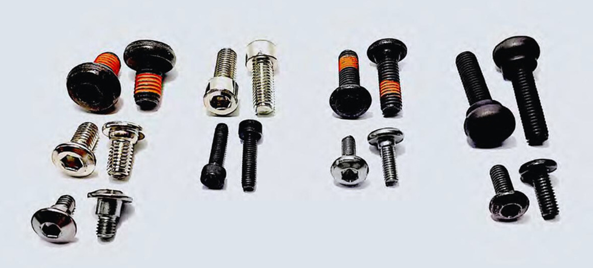
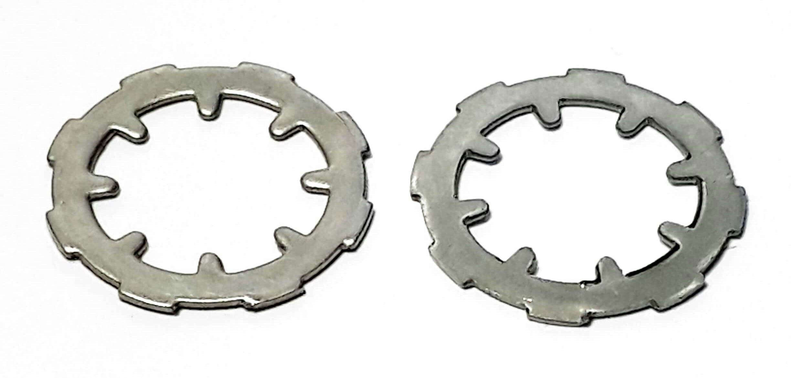
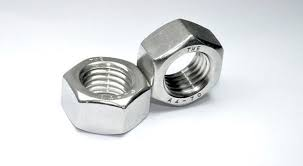

WELCOME

heading machine
- Specification : ⌀2.0mm-4.0mm —1 Unit
- Specification : ⌀4.0mm-6.0mm —1 Unit
- Specification : ⌀6.0mm-8.0mm —1 Unit
- Specification : ⌀8.0mm-10mm —1 Unit
rolling machine
- Specification : ⌀2.0mm-4.0mm —1 Unit
- Specification : ⌀4.0mm-6.0mm —2 Unit
- Specification : ⌀6.0mm-8.0mm —2 Unit
- Specification : ⌀8.0mm-10mm —1 Unit
welding bolt
Baut jenis ini biasanya dapat diidentifikasi dengan mudah dari bentuk kepala yang terlihat seperti kubah. Baut seperti ini biasanya digunakan untuk menyambungkan komponen yang terbuat dari material kayu. Welding Bolts atau juga memiliki bentuk persegi empat di bawah kepala yang berfungsi untuk mengikat komponen kayu dengan lebih kuat.
hexagonal bolt

Baut jenis ini biasanya banyak digunakan untuk reparasi maupun industri konstruksi. Seperti namanya, baut segi enam memiliki bentuk hexagonal pada bagian kepalanya. Material yang digunakan untuk baut seperti ini biasanya beragam sesuai dengan penggunaannya. Selain itu, baut jenis ini juga banyak memiliki komponen seng plating atau kadmium sebagai lapisan untuk mengurangi resiko korosi dan terbentuknya karat.
Penggunaan baut segi enam juga sangat beragam, termasuk untuk industri otomotif hingga aplikasi yang sering terpapar suhu tinggi.
washer
Washer merupakan komponen berbentuk cincin yang diposisikan antara baut dan mur serta objek yang dikencangkan. Ada beberapa fungsi washer yang biasanya didasarkan pada bentuk washer tersebut, antara lain:
screw

Sekrup (screw) adalah jenis lain dari fastener yang memiliki bentuk dan fungsi yang hampir mirip dengan baut. Perbedaan terbesar adalah ukuran sekrup yang jauh lebih kecil dibandingkan dengan baut.
nut
Tidak jauh beda dengan baut, mur juga memiliki klasifikasi tersendiri yang didasarkan pada fungsi serta kebutuhan penggunaan mur tersebut. Di bawah ini merupakan beberapa jenis kepala mur yang sering dijumpa
Description